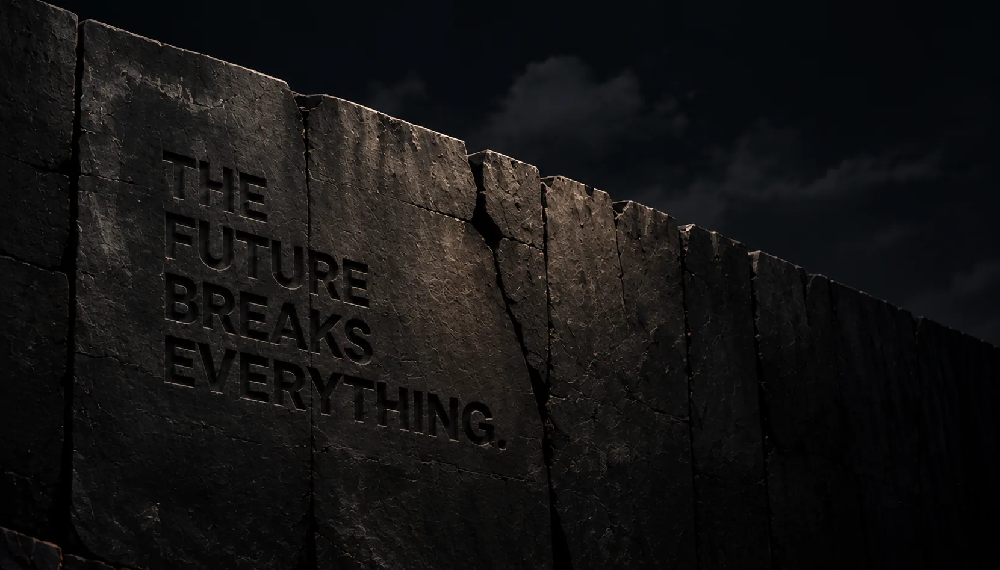
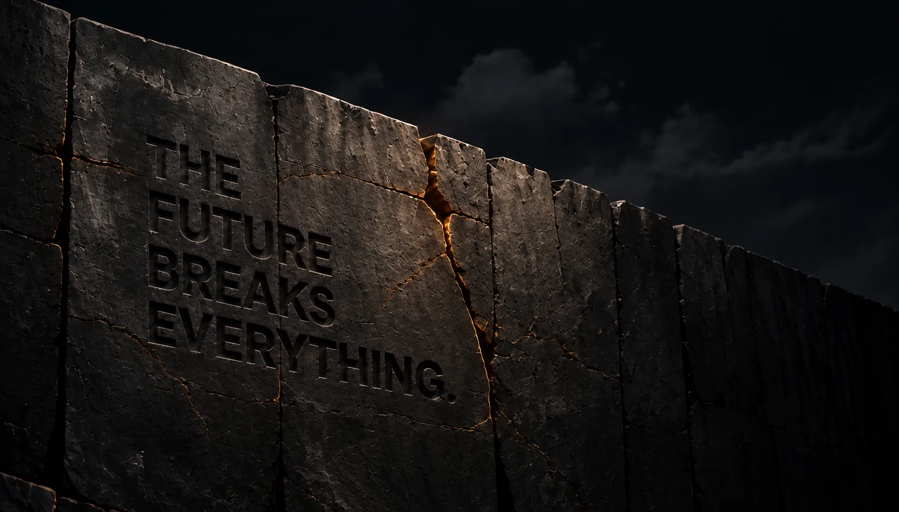
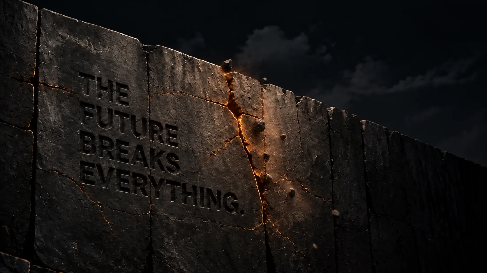
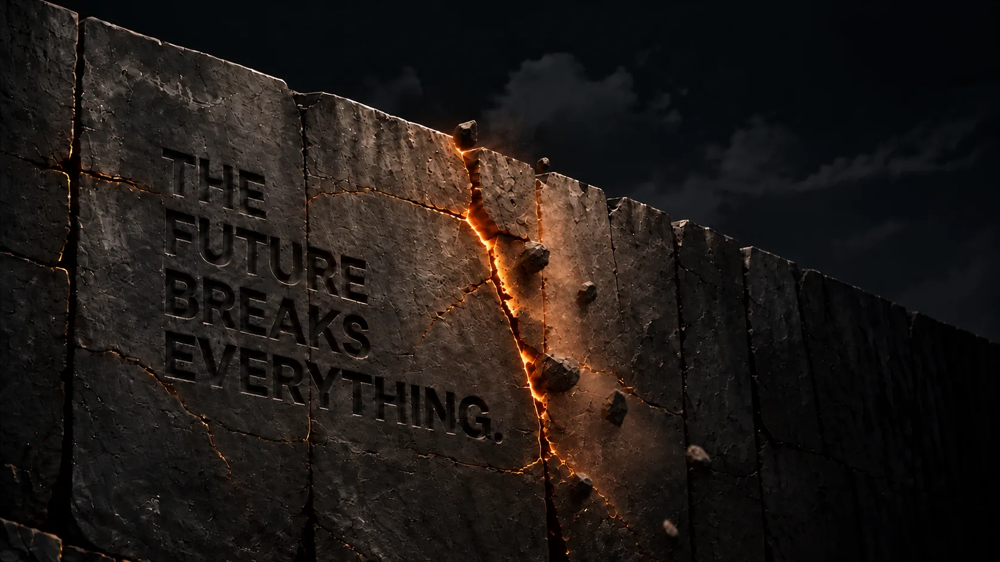
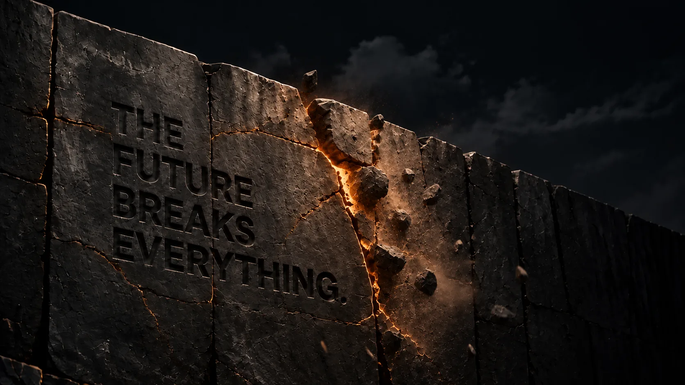
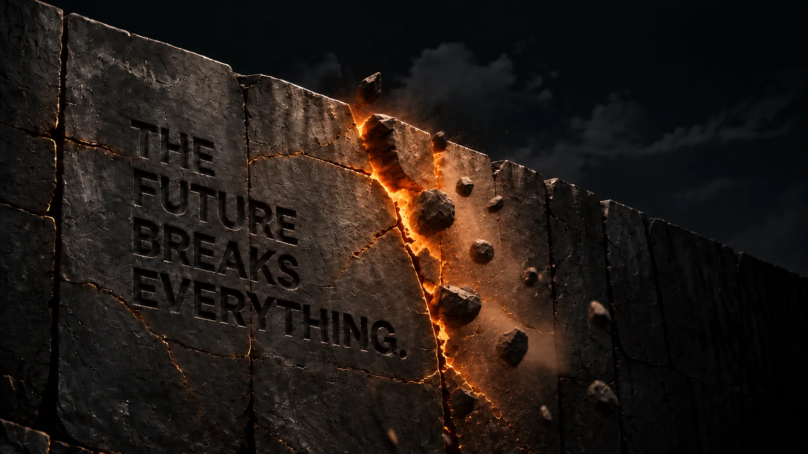
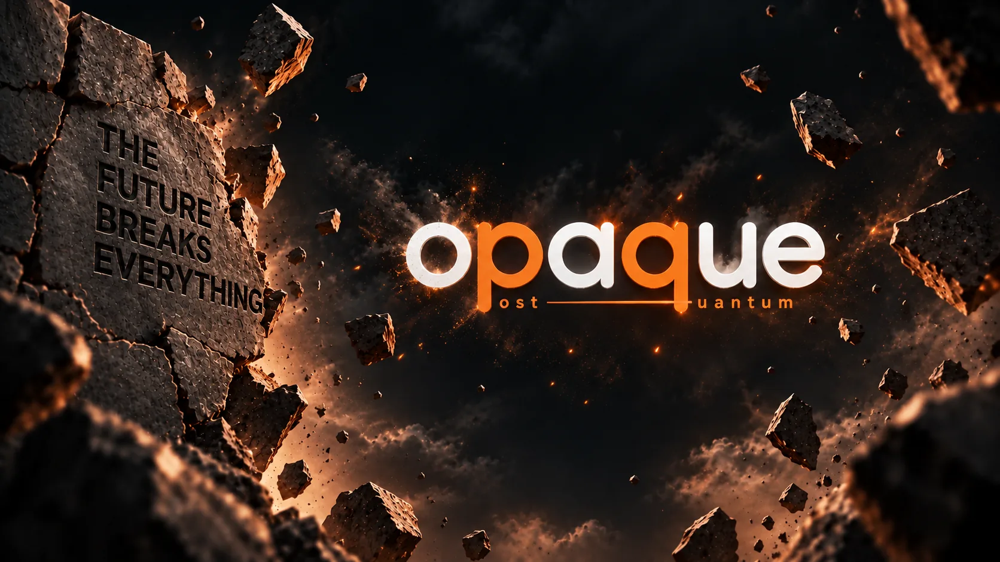
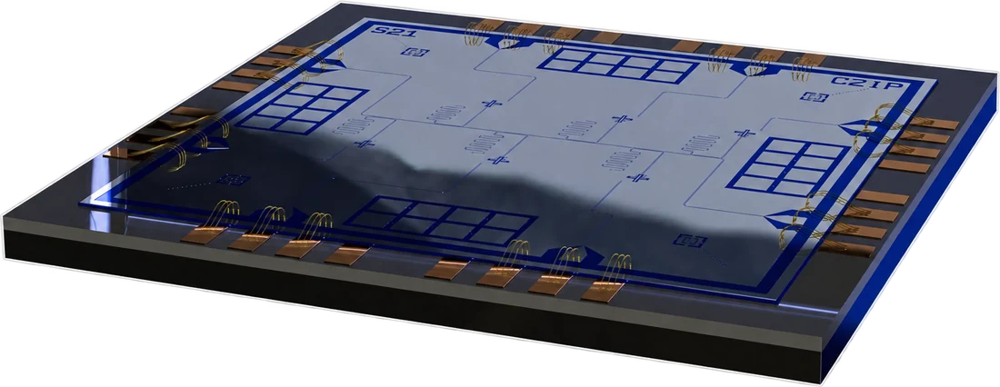
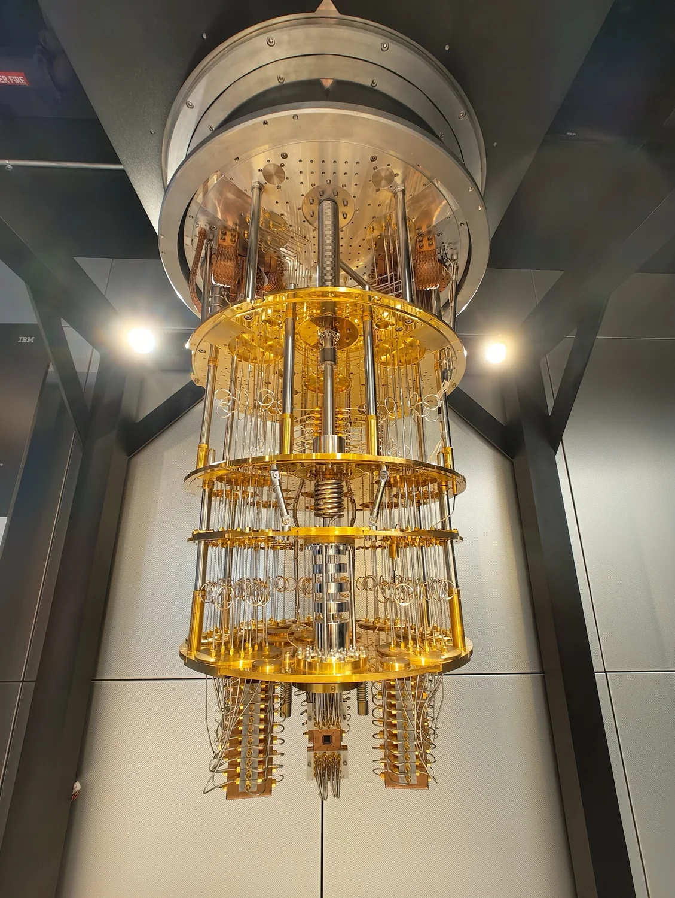

The future breaks everything. But never your wallet.
Same internet.
A more private
tomorrow.
Even an opaque wall can be broken tomorrow.
But never your wallet.
Post-quantum · network-private · conditional
Private payments built for the quantum era.
An eight-note ring hides which note was spent. A three-hop relay mesh hides where the request came from. A confidential intent waits for the right privacy conditions.
Most privacy systems focus on what happened on-chain. Opaque also protects the key that authorises a spend and the network path used to submit it—two places where privacy can disappear before settlement begins.
Quantum-safe keys
Hash-based authorisation, without elliptic curves.
The wallet uses a FORS+C hash-based key to authorise deposits and rotation. Anonymous spends use a hash-only proof over eight note commitments, so the spend path does not depend on elliptic-curve cryptography.
Network-level
Hiding the payment is not hiding the person.
Encrypting a transaction can still leave an IP address behind. Opaque routes payment and query traffic through three onion-encrypted hops, with batching and random delay, to resist simple timing links between a wallet connection and settlement.
Conditional settlement
Execute when the privacy conditions are strong.
A Chainlink CRE workflow releases a confidential intent after compliance passes and the requested privacy score is available—or its deadline arrives. Fixed-denomination USDC then settles through the pool on Arc.
The machine does not have to exist yet to matter. Public-chain activity can be archived indefinitely. If a signature scheme is vulnerable to a future quantum computer, a key exposed today can become a liability later.
What survives a quantum computer
Shor's algorithm threatens discrete-log and pairing-based systems. Hash-based designs face a different, better-understood security reduction under Grover's algorithm.
The gap
Why nothing like this exists yet.
Railgun, Aztec and Privacy Pools focus on transaction privacy with zero-knowledge systems. Opaque adds post-quantum spend authorisation and network-origin privacy.
Monero combines ring-based transaction privacy with network-layer protections, but uses different cryptographic assumptions and its own purpose-built chain.
Private RPC and protected mempools reduce public transaction exposure, while the provider can still observe the connection. Opaque routes the request itself through a relay mesh.
The contribution is the composition: hash-based spend authorisation, ring-based sender privacy, network-origin privacy and privacy-aware execution in one flow.

Threat model
Said plainly, including what it does not do.
What it hides
- Which ring member signed a payment
- The payment amount
- The sender's network origin
- The input evaluated by the policy check
What it does not claim
- Defence against a global passive network adversary
- Defence if every relay hop is compromised at once
- Protection from your own timing and amount patterns
- Ring size 8 is a proof of concept, not a production anonymity set
- Recovery if local note secrets are lost
What you trust
The current proof of concept trusts a CRE attester for proof soundness: it verifies the zero-knowledge ring proof off-chain, while the contract enforces deposits, nullifiers, denominations and the attester's post-quantum authorization. Relays affect network privacy, but cannot approve a spend.

Built on what's real
FORS+C wallet keys
Few-time hash-based signatures with explicit usage limits and post-quantum key rotation.
Hash-only ring proofs
MPC-in-the-head proves knowledge of one note opening without revealing which member of the eight-note ring was spent.
Graph-guided routing
Indexed ring and relay health data drives decoy selection, hop selection and privacy-aware execution.
Even an opaque wall can be broken tomorrow.
But never your wallet.
Building the infrastructure for a post-quantum internet — secure, open, and built for what's next.
Privacy
that lasts.
Built
for a more
private tomorrow.
{kind=link}
_installation.jpg){kind=link}
{kind=link}